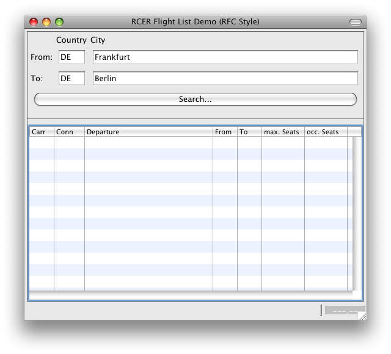

The SAP R/3 Connector SDK contains several example demonstrating the use of the connector. These examples all share a common structure and task: Using the BAPI BAPI_SFLIGHT_GETLIST to retrieve a list of flights from the standard example. This function module is present in every SAP R/3 system; however, you may need to generate some example data before reading it.
You can run these examples directly from the workbench by creating a launch configuration that runs an Eclipse Application and points to the corresponding application.
All of the flight data examples share a similar user interface:
Enter some selection criteria in the upper part of the application and invoke the function module to search for flights.